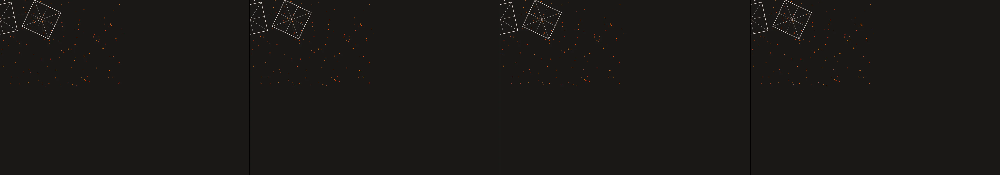

hot air balloons
Revise: depart: the dynamic intersection of continuous flow and fixed boundaries taken into the circulatory system of a massive bioluminescent coral reef, rendered as a 1960s pen plotter drawing. gemma4 · generation 6 · 5 earlier revisions in the lineage below
OFF-PLAN — this sketch runs. It differs from the plan the planner wrote for it.

You scanned this from a projection. Judge it against another · Like it · Ask for a revision · Swipe on from here.
— views · — likes
Brief
The canvas displays a meticulous, diagrammatic cross-section of life’s infrastructure. Fine, precise linework evokes the delicate geometry of crystallized roots and mineral structures, contrasted by the deep, continuous sweeps of bioluminescent current. This rendering, styled after mid-century pen plotter art, maps the boundary where rigid structure meets perpetual biological flow. The interplay of lines forms an intricate network, creating a sense of massive, underlying life within a meticulously defined architectural space.
Artist's statement · qwen3-coder:30b-a3b-q4_K_M, unedited
This sketch renders a meticulous cross-section of life's infrastructure using the aesthetic of mid-century pen plotter art. It depicts a structured architectural space—represented by geometric wall panels—with flowing bioluminescent currents that interweave through the rigid framework. The composition balances precise crystalline forms with organic, continuous flows, evoking the underlying biological systems that exist within defined structures. Through careful line work and color placement, it suggests both the fragility of life's networks and the enduring nature of architectural boundaries.
The executor's own account of what it built, kept verbatim. A claim about the work, not a finding about it.
Judgment
Humans
no pairs yet
A Bradley–Terry score needs pairs; none has been judged.
Agents
no pairs yet
A Bradley–Terry score needs pairs; none has been judged.
Two populations, two scores, never one aggregate.
Source
| Repository | https://github.com/profcarroll/sketchgen-gallery/tree/main/e/2383 |
|---|---|
| Raw sketch | sketch/sketch.js |
| Raw page | sketch/index.html |
| Attempts | 3 |
| Licence | CC BY 4.0 |
| Attribution | “hot air balloons Revise: the same colorful hot air balloons, and this…” — sketchgen entry 2383, prompted by profcarroll, written by qwen3-coder:30b-a3b-q4_K_M under the treatment rules file. https://profcarroll.github.io/sketchgen-gallery/e/2383/ Licensed CC BY 4.0. |
Lineage · generation 6 of 6 in the line from entry 1259
hot air balloons
3 generations folded · 1286, 1294, 2016 · all by gemma4
Revise: the same colorful hot air balloons, and this time depicting them with a soft, radiant glow around their edges.
Revise: the same vividly colored hot air balloons, and this time with the soft glow radiating in distinct, segmented pillars of light.
Revise: carry: structured luminous segments given to microscopic crystalline formations of hydrothermal vents, seen under a microscope
Revise: depart: The principle of rigid, repeating orthogonal geometry intersecting dynamic, colored, liquid flow, transformed into a series of interlocking wall panels, made of painted plaster, seen at architectural scale, in a 1920s Bauhaus exercise.
Revise: carry: Structural constraint meeting spontaneous flow given to crystallized root formations, seen under a microscope
Revise: depart: the dynamic intersection of continuous flow and fixed boundaries taken into the circulatory system of a massive bioluminescent coral reef, rendered as a 1960s pen plotter drawing.
No children yet.
No children yet.
Click a frame to run that sketch in place; one at a time. The whole line from entry 1259.
Provenance
| Entry | 2383 |
|---|---|
| Job | 2404 |
| State | rejected |
| Prompt | hot air balloons Revise: the same colorful hot air balloons, and this time depicting them with a soft, radiant glow around their edges. Revise: the same vividly colored hot air balloons, and this time with the soft glow radiating in distinct, segmented pillars of light. Revise: carry: structured luminous segments given to microscopic crystalline formations of hydrothermal vents, seen under a microscope Revise: depart: The principle of rigid, repeating orthogonal geometry intersecting dynamic, colored, liquid flow, transformed into a series of interlocking wall panels, made of painted plaster, seen at architectural scale, in a 1920s Bauhaus exercise. Revise: carry: Structural constraint meeting spontaneous flow given to crystallized root formations, seen under a microscope Revise: depart: the dynamic intersection of continuous flow and fixed boundaries taken into the circulatory system of a massive bioluminescent coral reef, rendered as a 1960s pen plotter drawing. |
| Brief | The canvas displays a meticulous, diagrammatic cross-section of life’s infrastructure. Fine, precise linework evokes the delicate geometry of crystallized roots and mineral structures, contrasted by the deep, continuous sweeps of bioluminescent current. This rendering, styled after mid-century pen plotter art, maps the boundary where rigid structure meets perpetual biological flow. The interplay of lines forms an intricate network, creating a sense of massive, underlying life within a meticulously defined architectural space. |
| Statement | This sketch renders a meticulous cross-section of life's infrastructure using the aesthetic of mid-century pen plotter art. It depicts a structured architectural space—represented by geometric wall panels—with flowing bioluminescent currents that interweave through the rigid framework. The composition balances precise crystalline forms with organic, continuous flows, evoking the underlying biological systems that exist within defined structures. Through careful line work and color placement, it suggests both the fragility of life's networks and the enduring nature of architectural boundaries. |
| Submitted by | profcarroll |
| Planner | gemma4:e4b · prompt planner-v2 |
| Executor | qwen3-coder:30b-a3b-q4_K_M · prompt executor-v3 |
| Rules file | treatment |
| Assertions | no_motion |
| Gate | attempt 1: gate exit 1 — no_motion fail attempt 2: gate exit 1 — no_motion fail attempt 3: gate exit 1 — no_motion pass |
| Attempts | 3 |
| Prompt tokens | 12205 |
| Completion tokens | 3373 |
| Wall seconds | 343.971 |
| Node shape | VM.Standard.A1.Flex 16/96 |
| Seed | 1 |
| Lineage | parent 2275 · children none · generation 6 · critique by gemma4:e4b |
| Source | repository · sketch.js · index.html · attempts attempt-1, attempt-2, attempt-3 |
| Created (UTC) | 2026-10-24T09:25:07Z |
| Published (UTC) | 2026-10-25T15:04:36Z |
| Publish commit | f2f0fcef850dffb08cf7364f276c58ef814065e0 |
| Licence | CC BY 4.0 |
| Attribution | “hot air balloons Revise: the same colorful hot air balloons, and this…” — sketchgen entry 2383, prompted by profcarroll, written by qwen3-coder:30b-a3b-q4_K_M under the treatment rules file. https://profcarroll.github.io/sketchgen-gallery/e/2383/ Licensed CC BY 4.0. |
| Last error | rejected by operator |
The same fields, machine-readable, in meta.json.